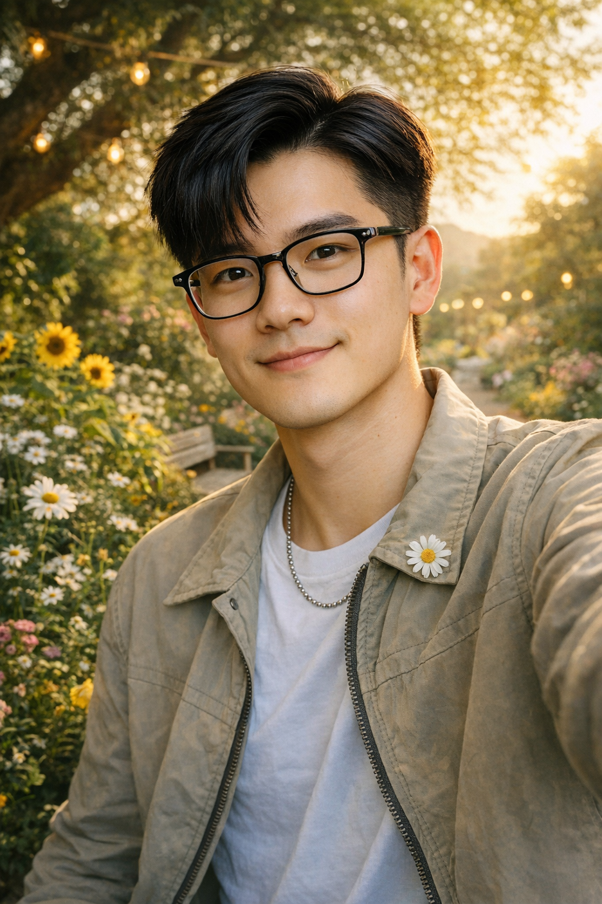

Week 2: AI & Identity
Exploring AI-generated representations of personal identity
Summary
This project reflects on how AI-generated portrait imagery constructs identity through appearance and symbolic cues.
Artifact
I generated two AI images of myself: one focused on physical identity and the other on values like nature, kindness, and peace.


Process Notes
- Tools used: AI image generation.
- Prompts: guided the model with physical description and values.
- Decisions: chose imagery that balanced identity, culture, and emotional context.
Reflection
AI has access to a large pool of both visual and nonvisual information, which allows it to create identities based on patterns and existing data. Because of this, the identity AI constructs is mainly a combination of perceptions rather than a true reflection of who a person is. Even when humans are involved in shaping the prompt, the result still lacks authenticity. From my experience, the images generated by ChatGPT from my prompts did not accurately represent my real identity.
AI is very capable of producing images that visually resemble an individual if the input is specific enough. This is made possible by its ability to match data and draw from a wide range of references. However, AI struggles to understand and represent deeper human qualities. Many important aspects of identity are internal, emotional, or value based, which makes them difficult to show through images.
This limitation was especially clear in the second image I generated. When I asked AI to reflect my love for nature, it simply placed me in a natural environment. My connection to nature is not just about scenery but also about values like environmental care and responsibility. Similarly, traits such as treating people kindly or feeling fulfilled in life are abstract and cannot be easily visualized. As a result, the identity created by AI feels incomplete and fails to fully capture who I am.
Attribution & AI Use
- Tools used: ChatGPT image generation tool.
- AI prompts: see the project prompts listed below.
- What AI generated: realistic portrait-style images.
- What you changed or decided: analyzed the images and reflected on identity gaps.
- Sources: None external.
Prompts
- Prompt 1: Create a selfie of myself according to this description: I'm a 21-year-old Vietnamese international student at a private liberal arts school in the US. I have a squarish face, wear glasses, have a 7/3 side part, relaxing black hair, and a stylish look.
- Prompt 2: Now alter the selfie to factor in these facts about myself: treat people very nice, love nature, want to advocate for equality and peace, be successful in life, and always feel fulfilled about everything I did.